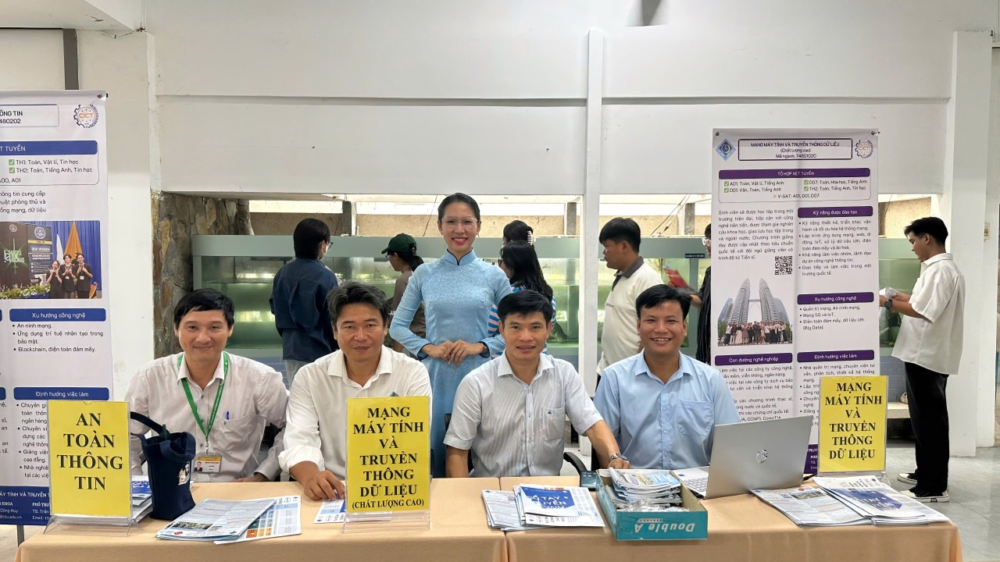
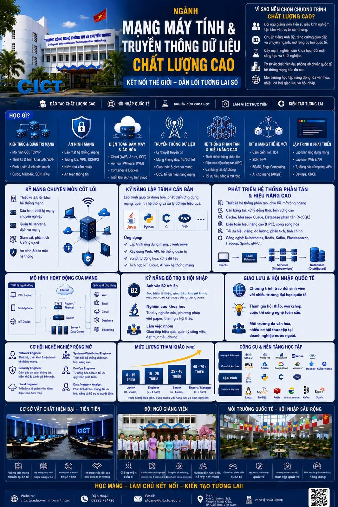

Admissions
Three undergraduate programmes offered by the Faculty of Computer Networks and Communications. Select a programme to view its curriculum, or visit the admissions portal of Can Tho University.

Engineer in Computer Networks and Data Communication
AUN-QA certified for 2021–2026. Students study network principles, design and deployment of network systems, network and web application development, big data processing and high-performance computing.
Engineer in CN & DC — High-quality Programme
Higher learning outcomes than the standard programme, more than 60% of courses taught in English, additional courses towards international certifications, and opportunities for exchange and study abroad.

The three programmes compared
Quota, subject combinations and entry scores for admission by national high-school examination results.
All three programmes award the degree of Engineer after 4.5 years. Entry scores of previous years are indicative only and are not a commitment for the next admission round.
Tuition fees
Rates for intake 52, academic year 2026 – 2027. The fee is fixed for the whole intake.
Quick calculation. The fee for a semester is the number of registered credits multiplied by the rate per credit. For example, 18 specialised credits × 966,000 = 17,388,000 VND. In a semester with general education courses as well, each group is counted separately.
Studying beyond the designed duration. The fee is multiplied by 1.3. Extending the programme is expensive — keep to the schedule of the study plan.
For the high-quality programme this corresponds to 1,366,000 VND per specialised credit; general education courses are still charged at 695,000 VND per credit.
After graduation
Career positions
Network administrator, security and network defence specialist; consultant, designer and builder of network systems; distributed-systems and high-performance computing engineer; software developer; researcher and lecturer in information technology.
CCNA international certificate
The Cisco Networking Academy course prepares students for the Cisco CCNA (200-301) certificate, taken at a Pearson VUE test centre. The high-quality programme embeds courses leading to international certificates.
Need more information?
Contact the Faculty office — phone +84 292 3734 720, email lt_mmt_tt@cit.ctu.edu.vn, or send us a message on our Facebook page.